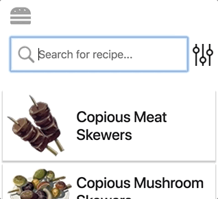
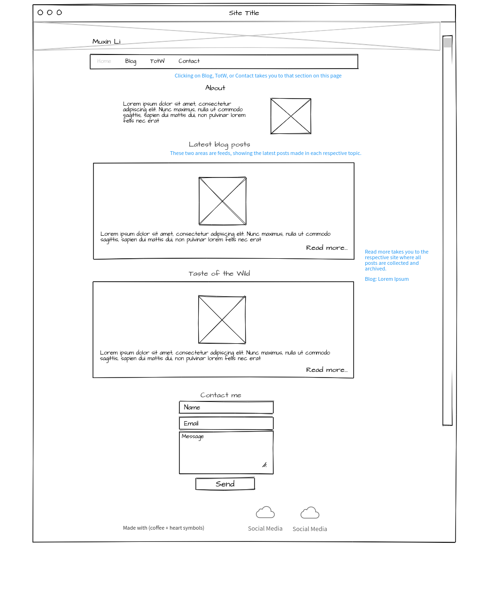

Layout adapts to screen sizes. SASS used to simplify media queries in CSS.

Search and filter
Find a recipe using search and filter options. Used JavaScript, jQuery, JSON, and HTML DOM methods.
Remember user actions
Stores whether recipes have been cooked. HTML5 localStorage used for light-weight data storage.
Business Strategy and Analysis
"Should we integrate this feature?"
Analyze market data and determine the value of adding a new feature.
Determined feature was a poor market fit for product's target segment and not a core value proposition to warrant the heavy upfront investment. Saved over $800K in development costs.
"How do we attract new clients?"
Identify value proposition of company's services to key decision makers of client companies.
Client decision makers must evaluate ROI before investing in new services. Analyzed previous client projects for impact of outcomes to communicate to business stakeholders. Was able to quantify a substantial impact, in which a major client saved over 20% in support call center costs, as a result of web development services.
Design and Product Management
Early prototype of a product website
Made with PowerPoint. New positioning for product family required rethinking of online user experience and more integration with other digital assets.

Wireframe of a website
Made with Mockflow.
Click images to show/hide details
Web and Software Development
JavaScript
JSON
jQuery
HTML
CSS
SASS
Product Management
Hewlett Packard Enterprise 2016 – Present
HPE Rock Star employee recognition for contributions to HPE Servers business.
Analyze market needs for support services on Cloudline open standard servers.
Manage product lifecycle management and strategy for Easy Connect product family.
Prioritize features backlog, identify new opportunities, and maintain roadmap.
Coordinate launch process with engineering and management.
Prototype new product landing pages and develop a consistent user experience in collaboration with web development teams.
Pragmatic Marketing PMC Level III: Certified for skill in market-driven product strategies, roadmaps, user stories, and personas.
Analytics and Marketing
Poetic Systems 2015
Ran A/B tests on Google Ads, used results to lower campaign cost by 63%, and increase total click count and impressions by 31.8% and 213.8%.
Developed data tracking on websites using Google Tag Manager, Google Analytics, and Drupal CMS.
Quantified business value of services to attract new clients.
BMC Software 2014 – 2015
Defined and ran social media strategy. Yielded over 10,000 impressions and increased content views by 123%.
Sushi Yan 2011 – 2013
Organized and ran marketing events.
Locatal 2009 – 2011
Drafted business proposal for Mercedes Benz
Consulted on company's marketing strategy for Western markets.
UX and Writing
Hewlett Packard Enterprise 2016 – Present
Prototype new product landing pages and develop a consistent user experience in collaboration with web development teams.
Sushi Yan 2011 – 2013
Designed and proposed new website layout for better user experience.
All-China Women's Federation 2009 – 2011
Guided redesign of online magazine for better user experience; received positively by users.
Wrote press releases, created and edited articles for the Women of China magazine.
Locatal 2009 – 2011
Created and edited translations for China Central Television, Giant Entertainment China, and China Ministry of Environmental Protection.
Master of Business Administration Rice University, Jones Graduate School Of Business 2013 – 2015
Full scholarship recipient for leadership, academic, and professional achievement.
Greater Houston Business Ethics Roundtable Scholarship for ethical leadership.
External Relations Lead of Rice startup accelerator OwlSpark and a Net Impact Officer.
NASA/GM Robo-Glove go-to-market and business plan. Product officially announced in 2016.
Waste Management plant profitability analysis and proposal for improving recycling habits.
Bachelor of Anthropology University Of Virginia 2005 – 2009
Conducted field research using primary and secondary methods, qualitative and quantitative data analysis, to investigate the socioeconomic impacts of waterfront development in Durban, South Africa.
Led live behavioral group experiments for psychology research department.
Analyzed dialogue patterns to identify personas in group power dynamics.